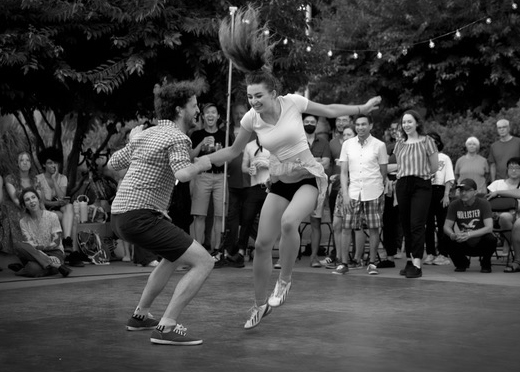
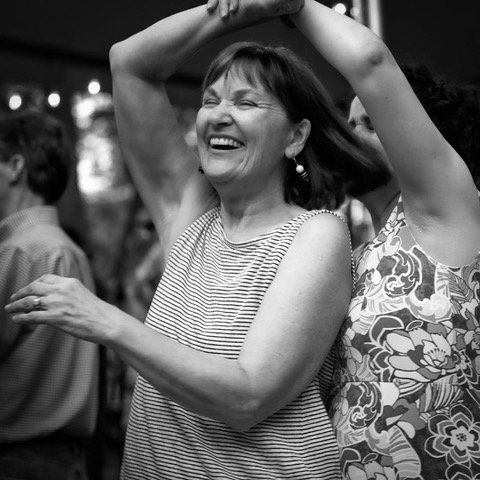

General information for Dancing Til Dusk 2024
All dances and lessons are FREE thanks to the support of our sponsors — please support and acknowledge their contribution!
- Please check the location of each dance as they are in one of eight parks downtown. See map link for park addresses and directions.
- In case of inclement weather call the Rain Hotline at 206-264-5646 to determine if the event will be cancelled.
- Every night, the first hour will be a beginning lesson in the dance style for the evening. There is a dance floor; if possible wear clean shoes that slide and do not black-mark the floor. No experience or partner is required for the lesson or dance. Each lesson will start at the beginning with the basics and will build in complexity, so be on time to get the most out of it. We have hired some of the best instructors in the city — this is your opportunity to learn from them!
- Parking — Available on the street or in lots close by. Meters are free after 8pm in most places or 10pm on Capitol Hill, so keep that in mind when parking. Earlier arrival often translates to less frustration, so plan accordingly and consider carpooling, the bus, the light rail or bicycle.
- Valuables — Please also keep in mind that these dances are in public city parks. Leaving valuables where they can be picked up by passersby is risky. Plan to keep a car key and any money with you and leave your valuables at home. If you leave items under the stage or under the flyer table, please keep in mind that we do not watch your stuff.
- Water and Beverages — There may or may not be water or beverages in the area for purchase, so we recommend that you bring a bottle of water with you. Please take your bottles and trash with you when you leave and recycle for the good of the planet! Please leave do not your water bottles or food on the flyer table. If they are found there, they will be moved elsewhere.
Thanks, and see you in the parks!


Organized by Lilli Ann Carey and

Help support Dancing til Dusk!
You can donate to support Dancing til Dusk by clicking this link: